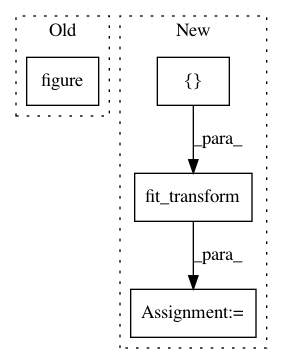

1039a5cd211fcd785a6a2901b0310660b18b7d93,examples/connectivity/plot_power_connectome.py,,,#,25
Before Change
node_size=20)
// Display the sparse inverse covariance
plt.figure(figsize=(5, 5))
plt.imshow(-estimator.precision_, interpolation="nearest",
vmax=1, vmin=-1, cmap=plt.cm.RdBu_r)
// And display the labels
After Change
connectivity = connectome.ConnectivityMeasure(kind="partial_correlation",
estimator=GraphLassoCV())
prec_matrix = connectivity.fit_transform([power_timeseries])[0]
// Display the sparse inverse covariance
plt.imshow(connectivity.precision_, interpolation="nearest",
vmax=1, vmin=-1, cmap=plt.cm.RdBu_r)
In pattern: SUPERPATTERN
Frequency: 3
Non-data size: 4
Instances
Project Name: nilearn/nilearn
Commit Name: 1039a5cd211fcd785a6a2901b0310660b18b7d93
Time: 2016-06-09
Author: abraham.alexandre@gmail.com
File Name: examples/connectivity/plot_power_connectome.py
Class Name:
Method Name:
Project Name: nilearn/nilearn
Commit Name: 363cb21af01cd3c86067882b98eb08e6f4a33a75
Time: 2013-08-29
Author: philippe.gervais@inria.fr
File Name: plot_adhd_covariance2.py
Class Name:
Method Name:
Project Name: nilearn/nilearn
Commit Name: b851452bfc933f78ee1c4e42188744a8c5f14c52
Time: 2015-12-03
Author: dkamalakarreddy@gmail.com
File Name: examples/connectivity/plot_extract_regions_canica_maps.py
Class Name:
Method Name: